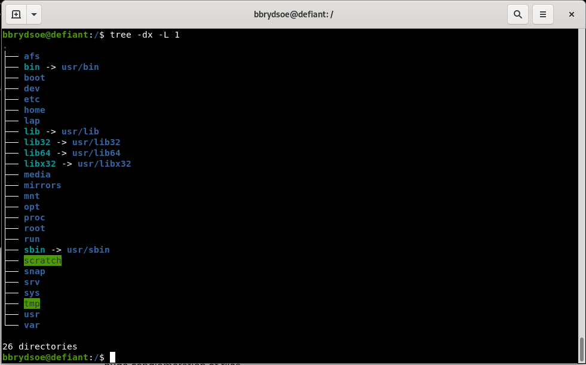
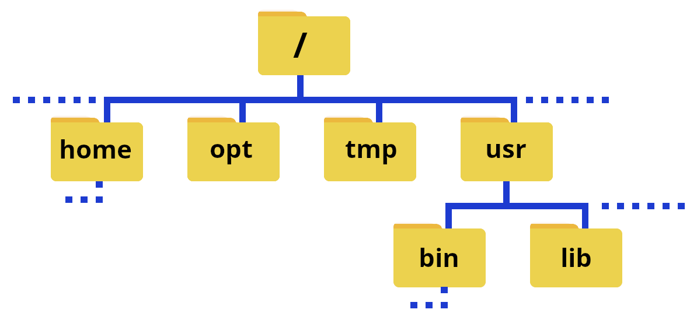
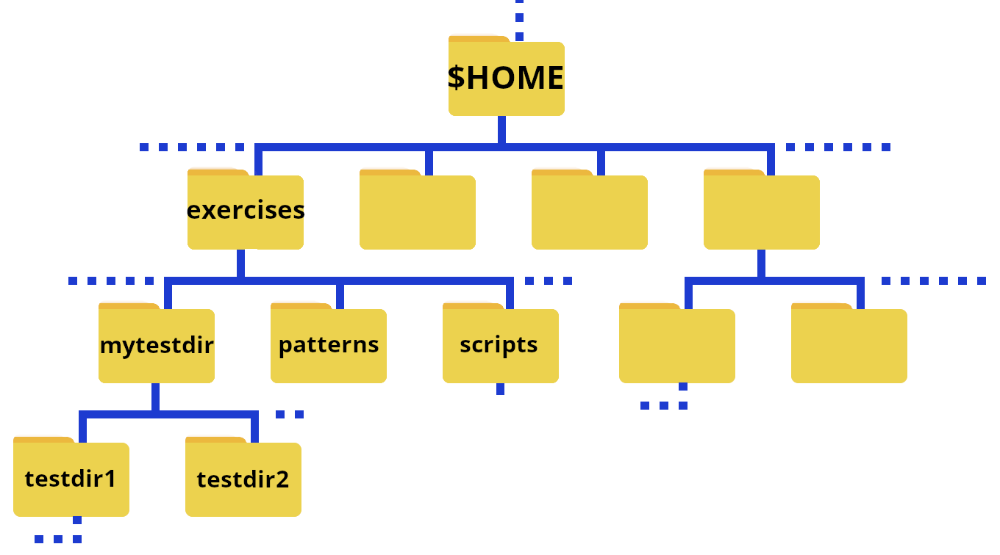

Navigating the File System¶
This section is going to be a high-level talk about the Linux filesystem concepts, not a low-level description of filesystem types.
Learning objectives
Questions
- How do I list my files?
- How do create and remove files and directories?
- How do I copy/rename files and directories?
Learning objectives
- Learn how to navigate the Linux file system
- Learn about files and directories
- Learn about paths
- Be able to create and delete files and directories, as well as rename and copy them
- Get a brief introduction to permissions
- Learn about options (flags) and arguments to shell commands
- Learn about the tab completion

The Linux filesystem directory structure starts with the top root directory, which is shown as /. Below this are several other standard directories. Of particular interest are usr/bin, home, usr/lib, and usr/lib64. A common directory which you will also often find is usr/local/bin.
The picture on the right shows typical subdirectories under / (note that the command ‘tree’ does not work at all HPC centres, though it does work on Tetralith - see the page tree under “Extras section for how to install if it is missing). Some of the directories have a symbolic link to a different name - this is often done to make it quicker to write, but can also be for compatibility reasons since some software have hardcoded paths.
Note
The path or pathname is the representation of the location of a file or folder/directory on a computer file system.
- / is the root of the directory structure on a Linux filesystem
- /usr/bin contains (most) of the system-specific binaries
- /usr/local/bin holds non-system binaries. often locally compiled/maintained packages
- /home is where the home directories of the users of the system are located
- /usr/lib holds kernel modules and shared library images needed to boot the system and run commands in the root filesystem
- /usr/lib64 is the same as /usr/lib, just for 64-bit libraries
User-installed binaries are often located in /opt.
The file system could also be illustrated like this:

Note
The character / can be
- the root directory, if it is at the front of a file or directory name
- a separator if it appears inside a path.
Note
If you are on a local cluster, on an HPC centre, etc. where you are not root, you will as default be in your home directory when you login. You can use cd .. a couple times to go to the root of the system and do tree there if you want, or do tree in your home directory (you can always return there with just cd).
Running tree in / on a supercomputing centre will probably give a very large/long output!
Home folders on Tetralith¶

The above shows an illustration where the home folders are emphasized.
Your home directory¶
When you login to the computer (as a non root user), you will end up in your home directory.
The path to your home directory varies somewhat. Here are some examples for me:
- Tetralith:
/home/x_birbr - Kebnekaise:
/home/b/bbrydsoe - My laptop, ncc-1701:
/home/bbrydsoe - My home desktop, defiant:
/home/bbrydsoe
Note
You can always use the command pwd to see the actualy path!
You will always return to your home directory by giving the command cd and pressing enter.
There are is also an “environment variable” that can be used as shortcut for the path: $HOME. We will talk more about (environment) variables later.
pwd¶
The command pwd (print working directory) will print out the full pathname of the working directory to the screen.
You can use this to find out which directory you are in.
Example, in your home directory¶
On Tetralith, user x_birbr:
On Kebnekaise, user bbrydsoe:
Example, in a directory named testdir¶
On Tetralith, user x_birbr:
Example, in subdirectory mydir under directory testdir¶
On Tetralith, user x_birbr:
cd - changing directory¶
The command cd is used to change directory.
- cd: Go to your home directory ($HOME)
- cd DIR: Change directory to DIR
- cd ..: Change directory to the parent directory of the current directory
- cd -: go back to the previous directory
Example
This is the structure of the exercises directory that you got after extracting the tarball:

Remember, $HOME is an environment variable which gives a shortcut to your home directory.
NOTE if you are on Tetralith and placed the exercises under /proj/linux-intro/users/USERNAME then $HOME would be replaced by that path.
To change to the directory exercises when you are in your home directory, you do
To then change to the directory testdir1 you do
To quickly go back to your home directory, do
To quickly go to a subdirectory, for instance exercises/testdir2 you then do
To go to the above directory from anywhere on the system in question, do
Info
You can use full paths (also know as absolute paths) or relative paths to give the location.
An absolute path makes no assumptions about your current location in relation to the location of the file or directory you want to access. It specifies the location from the root of the file system.
The path with reference to your current directory is called the relative path.
ls - listing files/directories¶
The ls command is used to list files. If you just give the command “ls” with no flags it will list all files in the current directory except for hidden files.
This way you can to list files/subdirectories for any directory, but the default one is the one you are currently standing in.
Some examples:
ls /lists contents of the root directoryls ..lists the contents of the parent directory of the currentls ~lists the contents of your user home directoryls *lists contents of current directory and subdirectories
Commonly used flags
-d */lists only directories-alists content including hidden files and directories-llists content in long table format (permissions, owners, size in bytes, modification date/time, file/directory name)-lhadds an extra column to above representing size of each file/directory-tlists content sorted by last modified date in descending order-trlists content sorted by last modified date in ascending order-Rlists contents recursively in all subdirectories-slist files with their sizes-Ssort files/directories by size in descending order-Srsort files/directories by size in ascending order
To get more flags, type ls --help or man ls in the terminal to see the manual.
Tip
You can often get more info on flags/options and usage for a Linux command with
COMMAND --helpman COMMAND
where COMMAND is the Linux command you want information about, like ls, mkdir, etc.
The output for a few of the flags, for a directory with two subdirectories and some files
[x_birbr@tetralith1 mytestdir]$ ls
myfile.txt myotherfile.txt testdir1 testdir2
[x_birbr@tetralith1 mytestdir]$ ls -a
./ ../ myfile.txt myotherfile.dat testdir1/ testdir2/
[x_birbr@tetralith1 mytestdir]$ ls -l
total 3
-rw-rw-r-- 1 x_birbr x_birbr 27 Sep 11 11:43 myfile.txt
-rw-rw-r-- 1 x_birbr x_birbr 33 Sep 11 11:43 myotherfile.txt
drwxrwxr-x 2 x_birbr x_birbr 4096 Sep 11 11:40 testdir1
drwxrwxr-x 2 x_birbr x_birbr 4096 Sep 11 11:39 testdir2
[x_birbr@tetralith1 mytestdir]$ ls -la
total 5
drwxrwxr-x 4 x_birbr x_birbr 4096 Sep 11 11:43 .
drwx------ 3 x_birbr x_birbr 4096 Sep 11 11:43 ..
-rw-rw-r-- 1 x_birbr x_birbr 27 Sep 11 11:43 myfile.txt
-rw-rw-r-- 1 x_birbr x_birbr 33 Sep 11 11:43 myotherfile.txt
drwxrwxr-x 2 x_birbr x_birbr 4096 Sep 11 11:40 testdir1
drwxrwxr-x 2 x_birbr x_birbr 4096 Sep 11 11:39 testdir2
[x_birbr@tetralith1 mytestdir]$ ls -lah
total 5.0K
drwxrwxr-x 4 x_birbr x_birbr 4.0K Sep 11 11:43 .
drwx------ 3 x_birbr x_birbr 4.0K Sep 11 11:43 ..
-rw-rw-r-- 1 x_birbr x_birbr 27 Sep 11 11:43 myfile.txt
-rw-rw-r-- 1 x_birbr x_birbr 33 Sep 11 11:43 myotherfile.txt
drwxrwxr-x 2 x_birbr x_birbr 4.0K Sep 11 11:40 testdir1
drwxrwxr-x 2 x_birbr x_birbr 4.0K Sep 11 11:39 testdir2
[x_birbr@tetralith1 mytestdir]$ ls -latr
total 5
drwxrwxr-x 2 x_birbr x_birbr 4096 Sep 11 11:39 testdir2
drwxrwxr-x 2 x_birbr x_birbr 4096 Sep 11 11:40 testdir1
-rw-rw-r-- 1 x_birbr x_birbr 27 Sep 11 11:43 myfile.txt
-rw-rw-r-- 1 x_birbr x_birbr 33 Sep 11 11:43 myotherfile.txt
drwx------ 3 x_birbr x_birbr 4096 Sep 11 11:43 ..
drwxrwxr-x 4 x_birbr x_birbr 4096 Sep 11 11:43 .
[x_birbr@tetralith1 mytestdir]$ ls *
myfile.txt myotherfile.dat
testdir1:
file1.txt file2.sh file3.c file4.dat
testdir2:
file1.txt file2.txt file3.c
[x_birbr@tetralith1 mytestdir]$ cd testdir1
b-an01 [~/mytestdir/testdir1]$ ls -l
total 2
-rw-rw-r-- 1 x_birbr x_birbr 31 Sep 11 11:47 file1.txt
-rw-rw-r-- 1 x_birbr x_birbr 16 Sep 11 11:49 file2.sh
-rw-rw-r-- 1 x_birbr x_birbr 74 Sep 11 11:49 file3.c
-rw-rw-r-- 1 x_birbr x_birbr 25 Sep 11 11:50 file4.dat
[x_birbr@tetralith1 mytestdir]$ ls -ls
total 2
1 -rw-rw-r-- 1 x_birbr x_birbr 31 Sep 11 11:47 file1.txt
1 -rw-rw-r-- 1 x_birbr x_birbr 16 Sep 11 11:49 file2.sh
1 -rw-rw-r-- 1 x_birbr x_birbr 74 Sep 11 11:49 file3.c
1 -rw-rw-r-- 1 x_birbr x_birbr 25 Sep 11 11:50 file4.dat
The “drwxr-xr-x” and “-rw-r--r--” are examples of permissions. The prefex d means is it a directory. A “-” means no permission for that. There are three groups: owner, group, and all. Note that “r” is for read, “w” is for write, and “x” is for execute.
chmod - change permissions¶
The command chmod is used to change permissions for files and directories.
There are three types of permission groups
- owners: these permissions will only apply to owners and will not affect other groups.
- groups: you can assign a group of users specific permissions, which will only impact users within the group. The members of your storage directory belongs here.
- all users: these permissions will apply to all users, so be careful with this.
There are three kinds of file permissions
- Read (r): This allows a user or a group to view a file (and so also to copy it).
- Write (w): This permits the user to write or modify a file or directory.
- Execute (x): A user or a group with execute permissions can execute a file. They can also view a subdirectory.
The permissions for a file, directory, or symbolic link has 10 “bits” and looks similar to this:

As shown, the first bit can be “-” (a file), “d” (a directory), or “l” (a link).
The following group of 3 bits are for the owner, then the next 3 for the group, and then the last 3 for all users. Each can have the r(ead), w(rite), and (e)x(ecute) permission set.
To change permissions, here are some examples
- owner
- chmod +rwx FILE/DIR to add all permissions of a file with name FILE or a directory with name DIR
- chmod -rwx FILE/DIR to remove all permissions from a file with name FILE or a directory with name DIR
- chmod +x FILE to add executable permissions
- chmod -wx FILE to remove write and executable permissions
- group
- chmod g+rwx FILE to add all permissions to FILE
- chmod g-rwx FILE to remove all permissions to FILE
- chmod g+wx FILE to give write and execute permissions to FILE
- chmod g-x FILE to remove execute permissions to FILE
- others
- chmod o+rwx FILE to add all permissions to FILE
- chmod o-rwx FILE to remove all permissions to FILE
- chmod o+w FILE to add write permissions to FILE
- chmod o-rwx DIR to remove all permissions to DIR
- all
- chmod ugo+rwx FILE/DIR to add all permissions for all users (owner, group, others) to file named FILE or directory named DIR
- chmod a=rwx FILE/DIR same as above
- chmod a=r DIR give read permissions to all for DIR
Note
It is also possible to change the ownership of a file or a directory. We are not going to cover this here, but you can read about the command chown and how to use it in the “More commands” section under EXTRAS.
Create and remove directories/files¶
This section will show how to work with files and directories through command line interface.
Directories¶
- mkdir DIR: Create a directory DIR
- mkdir -p DIR/SUBDIR: create a directory DIR with the subdirectory SUBDIR
- rm -r DIR: Remove a directory DIR. The flag “-r” means recursively
- You can also add “-f”. This means do so without asking for each file and subdirectory. Useful, but dangerous. Be careful!
Examples
Create a directory called mynewdir
Create a directory called cooldir which has a subdirectory called fancydir
Remove the directory mynewdir
Files¶
To create files, you would normally use an editor (nano, vim, emacs, etc.), but it is also possible to create an empty file with the command touch.
You can remove files with rm. Again, you can use the flag/option -f to force-remove a file (without asking).
Examples¶
Reminder
- mkdir DIR: Create a directory DIR
- rm -rf DIR: Remove a directory DIR. The flag “-r” means recursively and “-f” means do so without asking for each file and subdirectory. Useful, but dangerous. Be careful!
- cd: Go to your home directory ($HOME)
- cd DIR: Change directory to DIR
- cd ..: Change directory to the parent directory of the current directory
- cd -: go back to the previous directory
- touch FILE: create an empty file with the name FILE
- rm FILE: remove the file with the name FILE
- The command
pwdtells you the current directory path.
Creating directories, changing directories, removing directory and file
HINT: Code-along!
[x_birbr@tetralith1 ~]$ mkdir myowntestdir
[x_birbr@tetralith1 ~]$ cd myowntestdir/
[x_birbr@tetralith1 myowntestdir]$ mkdir testdir1
[x_birbr@tetralith1 myowntestdir]$ mkdir testdir2
[x_birbr@tetralith1 myowntestdir]$ mkdir testdir3
[x_birbr@tetralith1 myowntestdir]$ rm -rf testdir3
[x_birbr@tetralith1 myowntestdir]$ cd testdir1
[x_birbr@tetralith1 testdir1]$ touch file1.txt
[x_birbr@tetralith1 testdir1]$ touch file2.sh
[x_birbr@tetralith1 testdir1]$ touch file3.c
[x_birbr@tetralith1 testdir1]$ touch file4.dat
[x_birbr@tetralith1 testdir1]$ touch file5.txt
[x_birbr@tetralith1 testdir1]$ rm file5.txt
[x_birbr@tetralith1 testdir1]$
[x_birbr@tetralith1 testdir1]$ cd ..
[x_birbr@tetralith1 myowntestdir]$ cd testdir2/
[x_birbr@tetralith1 testdir2]$
Note
This was done on Tetralith. You will notice that only the current (subdir) is shown in the prompt. At some other centres all the (sub)dirs would be shown.
Example: HPC2N
cp - copy files/directories¶
This command is used to copy files or directories.
- cp myfile.txt DIR/: copy the file “myfile.txt” to the directory DIR
- cp DIR1/ DIR2/: copy the directory DIR1 into the directory DIR2 (Note: overwrites existing files with same name)
- cp -R DIR1/ DIR2/: copy the directory DIR1 and all subdirectories into the directory DIR2.
- cp -i file.txt DIR/: Interactive. It will ask before overwriting if there is a file with the same name.
Code-along
Go to the directory mytestdir under exercises directory that you got from the downloaded tarball. This is how the structure looks:
- Change to the subdirectory:
myfile.txt to the subdirectory testdir1:
3. Create a new directory called testdir3 inside testdir1
4. Copy the new subdirectory testdir3 to the directory testdir2. Remember, “testdir2” is located outside “testdir1” and at the same “level”. This can be done in more than one way. Remember you need the option -r (for recursive) when copying directories:a) “Go up one” and then copy: b) Copy will standing inside
testdir1
5. If you give the full path while copying, this can be done from anywhere.
mv - rename files/directories¶
The command mv is used to rename files and directories. It can also be used to move a file or directory to another location.
- mv file1.txt file2.txt: renames
file1.txttofile2.txt - mv DIR1/ DIR2/: renames directory
DIR1to directoryDIR2/ - mv file1.txt DIR1/: moves the file
file1.txtinto the directoryDIR1/ - mv -i file1.txt file2.txt: interactive. Asks before overwriting if there is already a file with the destination name.
- mv -i DIR1/ DIR2/: interactive. Asks before overwriting if there is already a directory with that name.
Note
mv complains if there is already a file/directory with the new name. You can force the renaming with “-f” at the cost of the disappearence of the file that previously held the name.
Exercise¶
Exercise
- Create three files (touch)
- Create a directory and then create a subdirectory of that directory (mkdir, cd)
- Create a file in the subdirectory (touch)
- Create another file inside the directory you created and then move it to the subdirectory you created (touch, cd, mv)
- Rename one of the directories (mv)
- Delete/remove a file (rm)
- Delete/remove the subdirectory (rm)
Solution - click to reveal
- I am randomly naming the files
afile.txt,bfile.txt,cfile.txt - I am naming the directory
newdirand the subdirectorysubdir
newfile.dat
4. I am naming the file secondfile.txt
5. I will rename the first directory (top-level directory) I created, calling it fancydir
6. I will remove the file afile.txt while standing “above” the directory fancydir (previously called newdir)
7. I am removing the subdirectory subdir while standing above the directory fancydir
Tip
You can always check with pwd that you are standing in the directory you think you are!
Symbolic links¶
Symbolic links are also called soft links, or just symlinks. It is a pointer to another file or directory.
- It is useful both for ease
- you avoid using a long path each time you change to a directory, like your project directory
- as well as to avoid changing hard links within other scripts or programs. This is good if you for instance install a program or use a script that assumes the library it uses is called libcoolness.a and not libcoolness.2.0.a. You can then just update the symlink instead of renaming the library or updating potentially many instances where it is mentioned in the program.
Command:
!!! Example (on Tetralith)
```bash
ln -s /proj/linux-intro/users/MYUSERNAME $HOME/myproj
```
This creates a symbolic link named "myproj" in your home directory, pointing to the location /proj/linux-intro/users/MYUSERNAME. The directory "linux-intro" is the project storage directory for this course project. For me, this would look like this:
```bash
[x_birbr@tetralith1 ~]$ ls -l
total 2
lrwxrwxrwx 1 x_birbr x_birbr 31 Sep 11 12:01 myproj -> /proj/linux-intro/users/x_birbr
drwxrwxr-x 4 x_birbr x_birbr 4096 Sep 11 11:43 mytestdir
```
Keypoints
- Your home directory is generally located in
/home/USERNAMEor/home/U/USERNAME - Your home directory can also be addressed with the environment variable
$HOME pwdis useful for determining your path and current location- To change directory you use the command
cdDIR - Just giving the command
cdtakes you to your homedirectory lsis used to list files and directories- You change permissions for files and directories with
chmod - You create a directory named DIR with
mkdir DIR - You remove a directory named DIR with
rm -r DIR - You can create an (empty) file named FILE with
touch FILE - You can remove a file named FILE with
rm FILE - The command to copy files and directories is
cp - The command to rename files and directories is
mv - Symbolic links are pointers to another file or directory